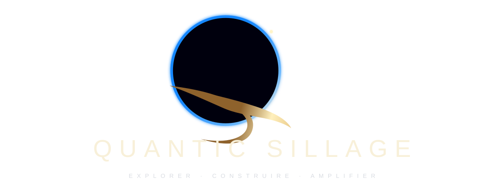

Logo principal

Version maître noire, or et bleu galactique.
Logo, palette, messages clés et éléments corporate pour médias, partenaires et présentations externes.
Le symbole combine un Q, une limite circulaire et un sillage. Le lien spatial reste indirect : l'horizon terrestre, la profondeur et la lumière servent l'idée de progression, pas un imaginaire de fusée.

Version maître noire, or et bleu galactique.
Quantic Sillage est un écosystème technologique indépendant réunissant Quantic OS, Quantic Glide, Providence et Quantic News. Sa démarche croise système, navigation, prospective, veille et intelligence appliquée autour d'un objectif commun : augmenter la capacité d'action sans ajouter de complexité inutile.
Créer des produits plus fluides, lisibles et contrôlables.
Un laboratoire produit entre système, IA, navigation et prospective.
Quantic OS, Quantic Glide, Providence et Quantic News.
Explorer · Construire · Amplifier.